2019 新北市歡樂耶誕城怎麼去?

板橋的新北歡樂耶誕城,是唯一在大台北展期最長,免費參觀的大型活動,加上景點眾多,每年來到耶誕城要去各個景點,卻怎麼找都找不到,今天文中會跟大家分享如何搭捷運板南線保證快速直達,超人氣的燈區與遊樂設施讓你輕鬆玩透透,2019年新北歡樂耶誕城,展出日期為2019/11/15～2020/01/01 想要體驗濃濃的耶誕節氣氛,第一站先來市民廣場就對啦!今年新北耶誕城以魔法為主題,先來看看主廣場,桑塔雄魔法小鎮.
【2019新北耶誕城】演唱會藝人名單、交通時間、燈區美食歡樂這樣玩
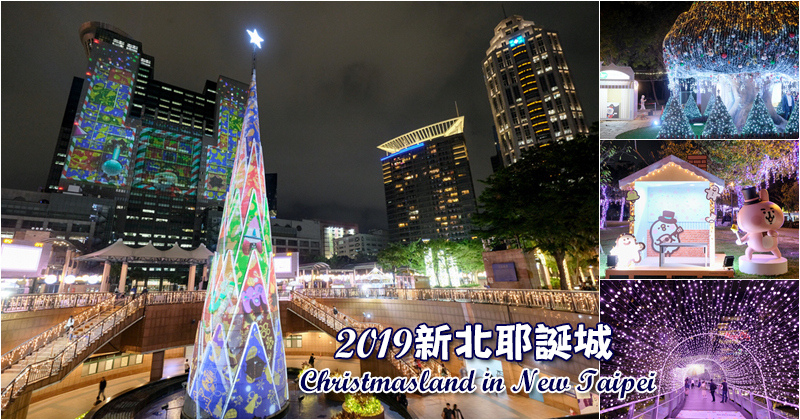 新北歡樂耶誕城2019怎麼玩？每年擠爆的板橋新北耶誕城演唱會藝人名單、開城點燈、浪漫燈區是三大重點。 新北耶誕城時間11月15日到2020年1月1日，新北耶誕城交通捷運板橋站二號出口最近，地址板橋市民廣場整區。
外地遊客來新北板橋耶誕城住宿多選板橋車站、或附近府中商圈落腳最方便。另外有關新北歡樂耶誕城美食， 波比也都整理好囉，一起玩遍「桑塔熊的魔法小鎮」、「新北魔法森林」、「卡娜赫拉的閃閃耶誕夢」三大燈區吧！
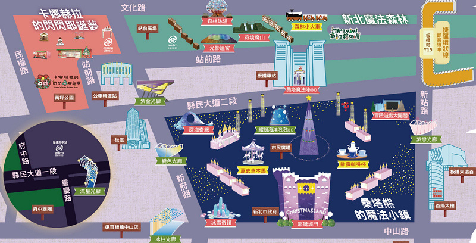 新北耶誕城地圖 (點擊看放大版) 先給大家，所有的燈區和遊樂設施一目了然囉。
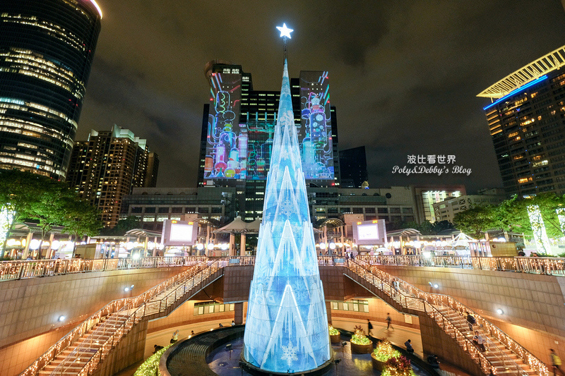
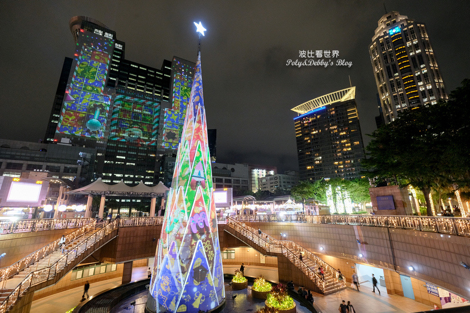 耶誕主燈秀： 全國最大面積投影雷射秀！全方位視覺饗宴＆多層次立體光影環繞效果。 亮燈期間：17:30-24:00 主燈秀時間：每日17:30-22:00 (每整點、半點一次，每次 5 分鐘) 位置：市民廣場
🔥11/15耶誕點燈開城秀 (18:00-19:30) 日本超高人氣女子偶像天團「乃木坂46」成員 ，松村沙友理＆高山一實要來耶！
耶誕城門： 神秘桑塔熊小精靈在這裡引領民眾們踏入魔法世界！ 亮燈時間：17:30-24:00 位置：市府南大門
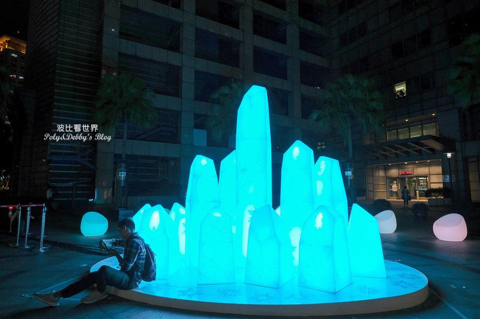 冰雪奇蹟： 藉由光線穿越冰的幻化折射，結合繪畫藝術，帶您一腳踏入《冰雪奇蹟》浪漫魔法世界！ 亮燈時間：17:30-24:00 位置：新府路&中山路口
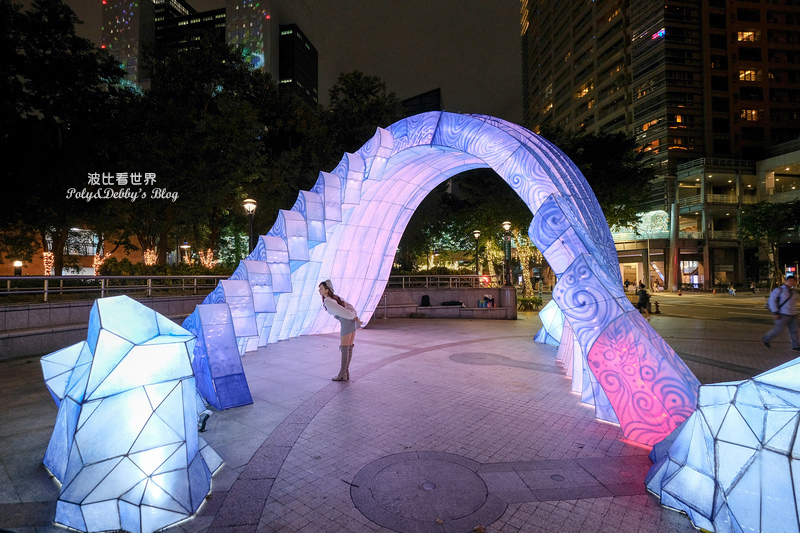 深海奇緣： 出發深邃海洋觀賞海浪構造奧妙和神奇。 亮燈時間：17:30-24:00 位置：新站路&縣民大道路口 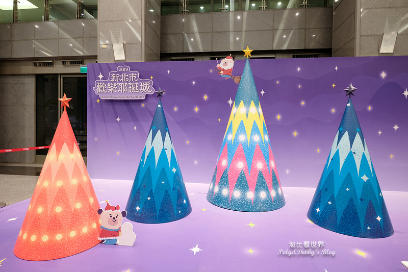 魔法耶誕樹： 桑塔熊將化為魔法精靈藏在耶誕城中的魔法森林，帶領大家展開一段歡樂的魔幻冒險，迎向2020的美好旅程！ 亮燈時間：17:30-24:00 位置：市府一樓大廳
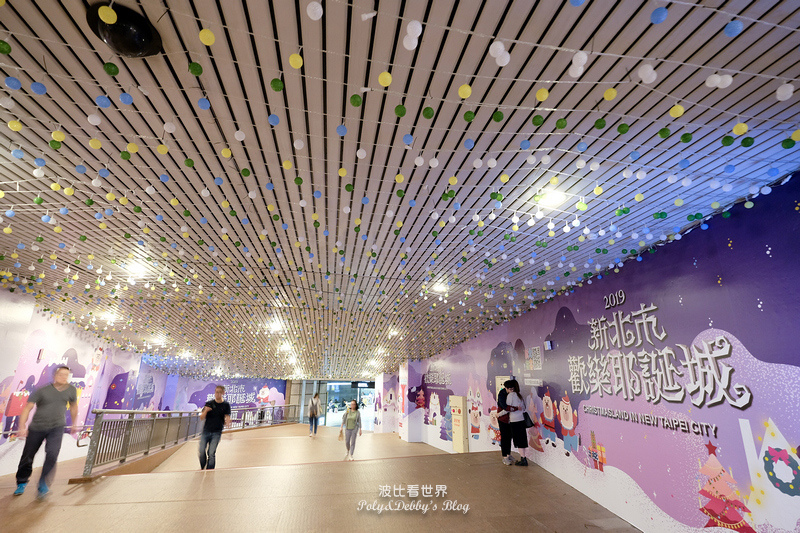 繽紛海洋泡泡： 快來一起感受在海洋泡泡中遨遊的魔法通道，充滿童趣，真可愛。 亮燈時間：17:30-24:00 位置：市民廣場B1連通道
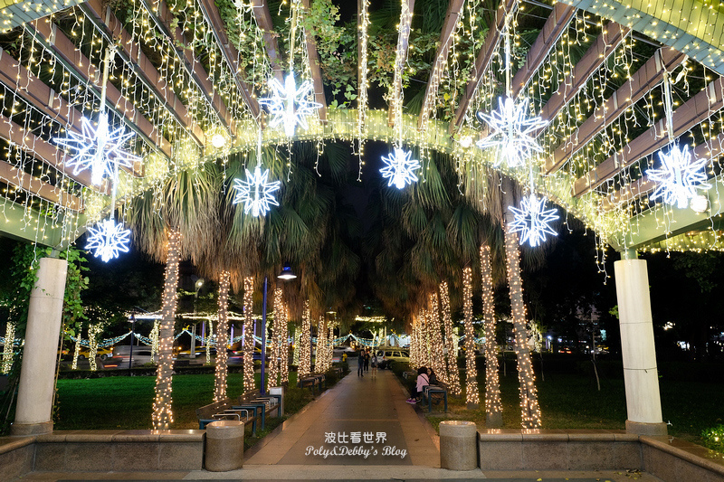 市民廣場一隅，新北耶誕歡樂城這區真的超級美的，隨便走、隨便拍都漂亮！
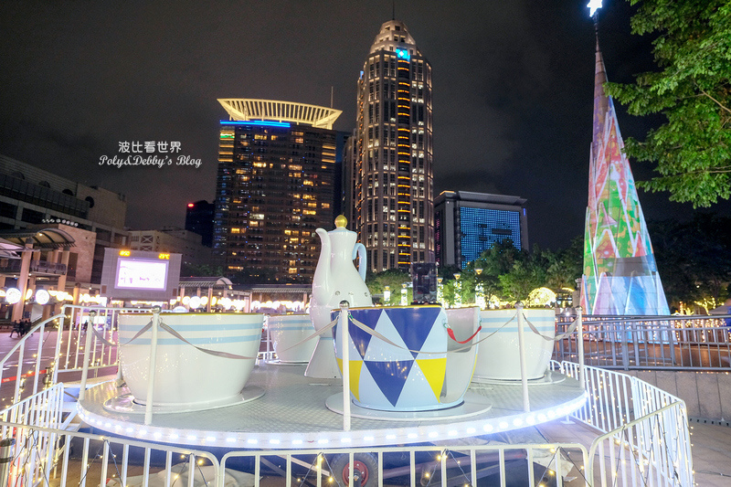 甜蜜咖啡杯 (免費遊樂設施) 快來桑塔熊的魔法小鎮搭乘甜蜜咖啡杯吧 年齡限制：本設施適用於 12 歲以下之人員乘坐。
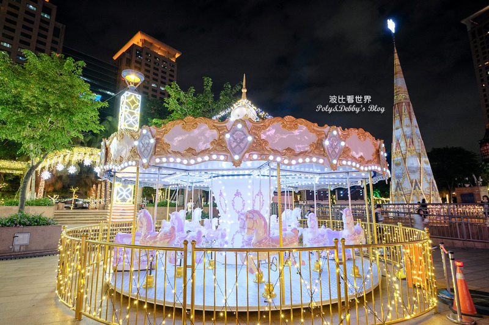 薰衣草木馬(免費遊樂設施) 薰衣草色系繼續佇立在桑塔熊的魔法小鎮裡等待著大家 年齡限制：本設施適用於 12 歲以下之人員乘坐。
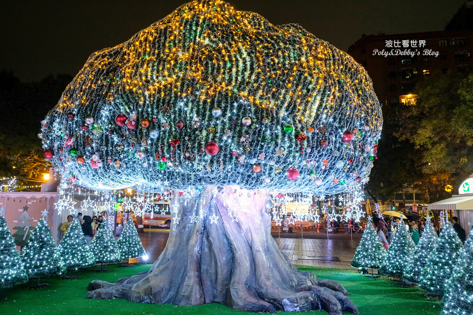
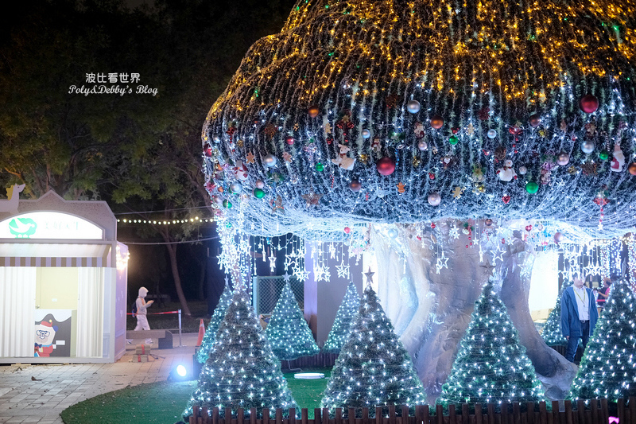 森林沐浴： 最浪漫的裝置藝術來了！絕無僅有的絢爛森林！波比今年最愛的新北耶誕城裝飾，超酷的～ 營運時間：11:00-22:00 位置：站前廣場
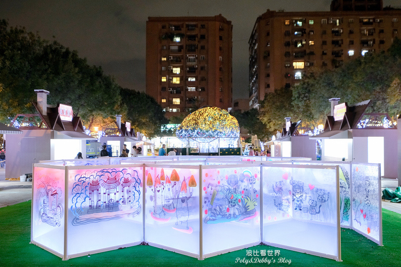 光影迷宮： 匯集燈光科技與繪畫藝術的大型迷宮出，是全新體驗呢！ 營運時間：11:00-22:00 位置：站前廣場
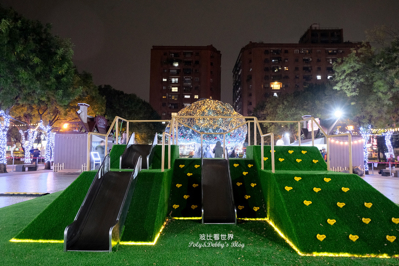 奇境魔山： 三層高度的人工草皮攀岩坡，喜歡戶外運動千萬不能錯過！ 營運時間：11:00-22:00 位置：站前廣場
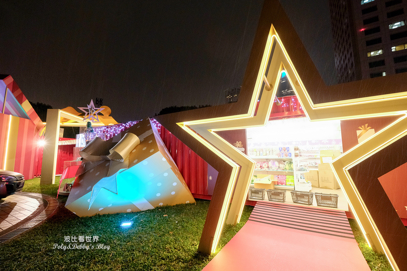 Miravivi耶誕禮物屋： 可愛維尼、米奇米尼、美少女戰士、蠟筆小新、波力等，店內好玩又好買，送禮自用都棒。 營運時間：11:00-22:00 位置：站前廣場
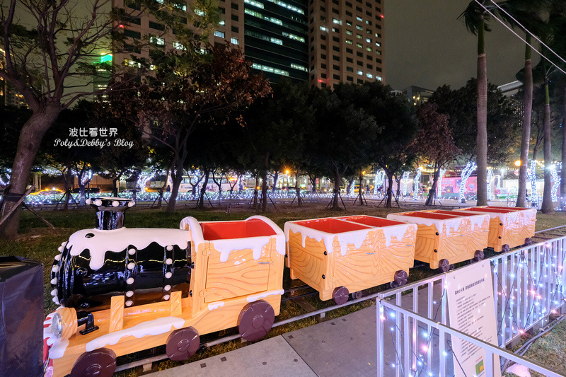 森林小火車(免費) 最愛的桑塔熊，一起開向新北歡樂耶誕城吧 年齡限制：本設施適用於 12 歲以下之人員乘坐。
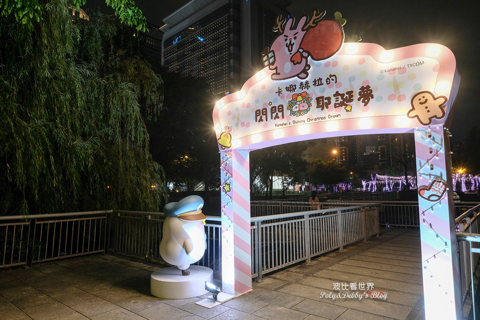 車長P助帶你走進夢幻耶誕村： 走進充滿可愛魔法通道拱門，進入歡樂卡娜赫拉的扭扭世界。 亮燈時間：17:30-24:00 位置：萬坪公園
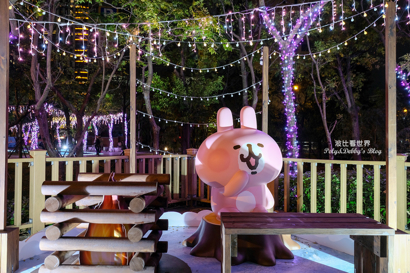 卡娜赫拉小動物耶誕小營地： P助與粉紅兔兔在營地中帶大家度過冬夜，快來小營地一塊取暖吧！ 亮燈時間：17:30-24:00 位置：萬坪公園 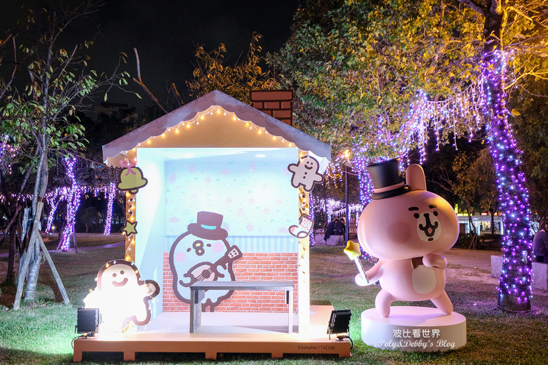 P助與粉紅兔兔的魔法薑餅屋： 薑餅屋裡還有哪些可口甜點呢，快來一探究竟吧！ 亮燈時間：17:30-24:00 位置：萬坪公園
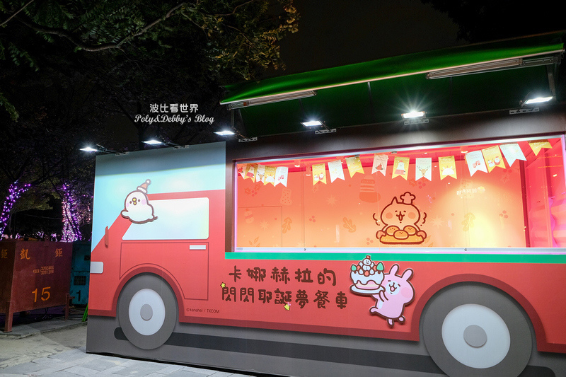
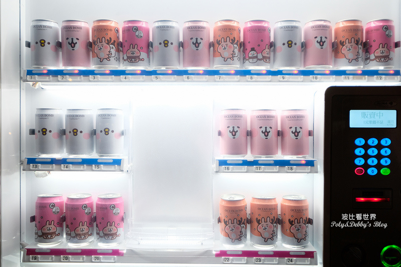 甜蜜餐飲小屋 新北耶誕城限定飲品及甜點，天天數量有限喔！投幣機也太可愛了吧！ 營運時間：11:00-22:00 位置：萬坪公園
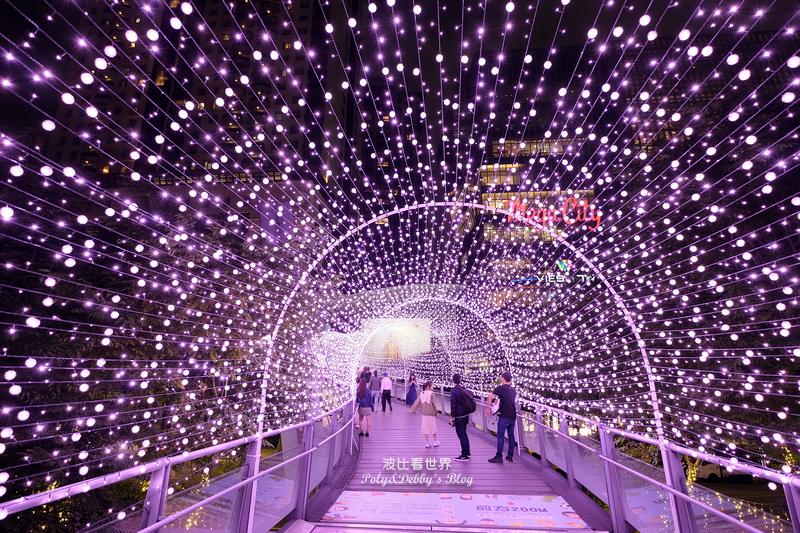 紫戀光廊 夢幻粉紫色魅力，走在橋上的人們都能感受到洋溢的幸福感！ 亮燈時間：17:30-24:00 位置：新站天橋
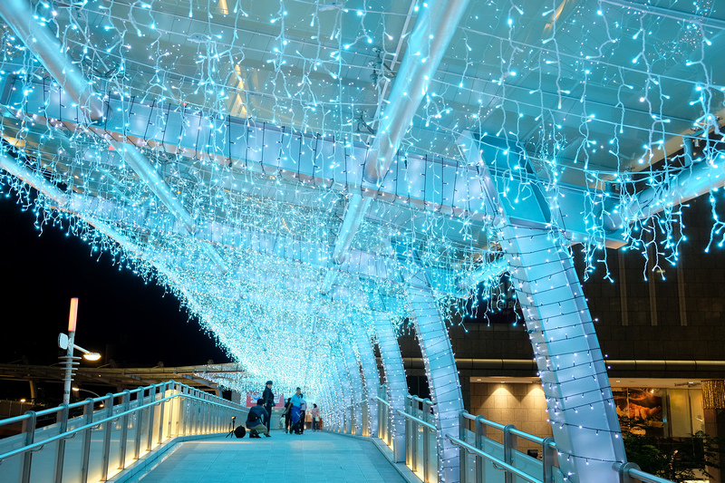 冰柱光廊 天橋上方垂墜冰雪結晶柱體，光點經過折射落到了橋面上，彷彿在極寒地帶中的一道極光！ 亮燈時間：17:30-24:00 位置：中山路天橋
去年爆紅的天橋燈飾，今年有五個喔，陸續再幫大家更新，敬請期待！
● 2019新北耶誕城演唱會名單 (12⁄14 六，18:00-22:00) 藝人卡司：蕭敬騰(壓軸)、Bii畢書盡、高爾宣、Erika、Julia吳卓源、小樂吳思賢、I-WANT 星勢力、美秀集團、曾沛慈 主持人：黃子佼
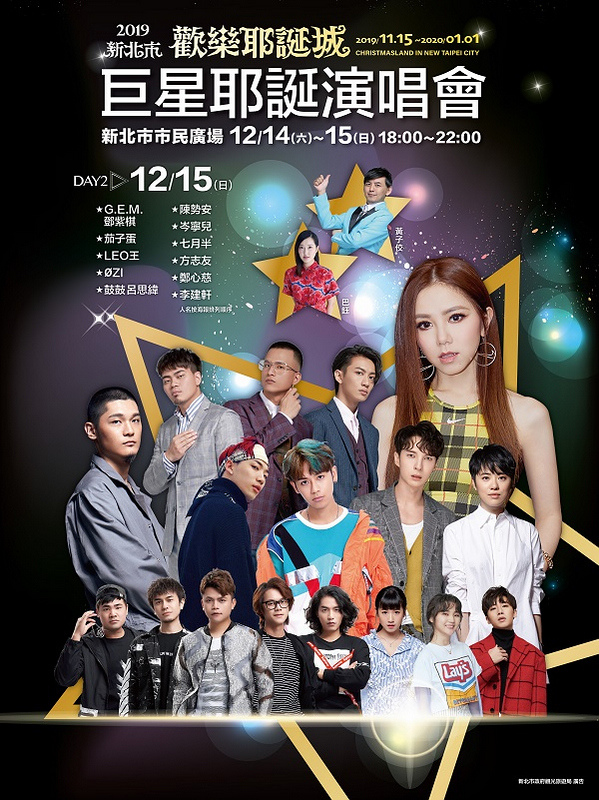 ●2019新北耶誕城演唱會名單 (12⁄15 日，18:00-22:00) 藝人卡司：G.E.M鄧紫棋(壓軸)、茄子蛋、ØZI、LEO王、鼓鼓呂思緯、陳勢安、岑寧兒、方志友、李建軒、七月半、鄭心慈 主持人：黃子佼
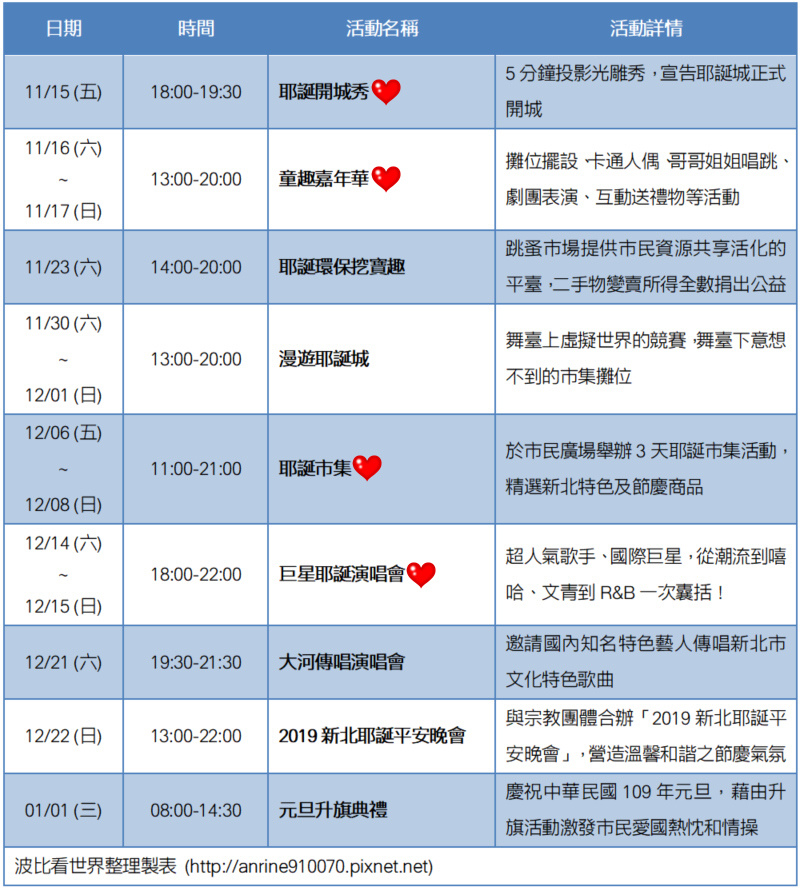 除了常態性燈區外，新北耶誕城活動還有非常多，波比通通幫大家彙整起來囉。 耶誕開城秀、童趣嘉年華、耶誕市集、巨星耶誕演唱會，是我覺得最最最值得朝聖的活動，標記給大家參考。
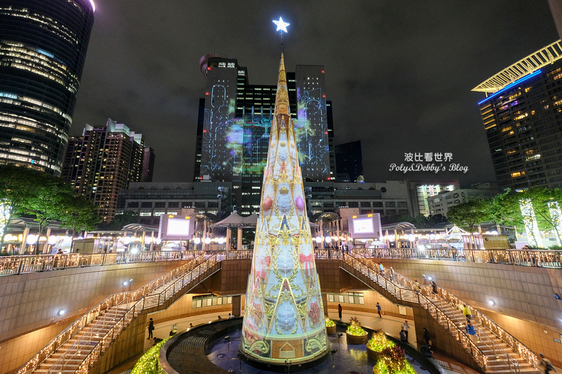 新北耶誕城交通非常方便，大眾運輸即可抵達：
- 捷運：板南線板橋站2號出口、 板橋站3號及3A出口即到
- 火車、高鐵：板橋車站下車後，步行5分鐘
- 開車停車場： ●市民廣場停車場 (每小時30元，地圖) ●板橋火車站停車場 (每小時40元，地圖) ●特專三停車場 (每小時平日20元、假日30元，地圖)
建議大家搭乘大眾運輸，尤其是新北耶誕城假日有夠無敵塞，車位難尋啊！
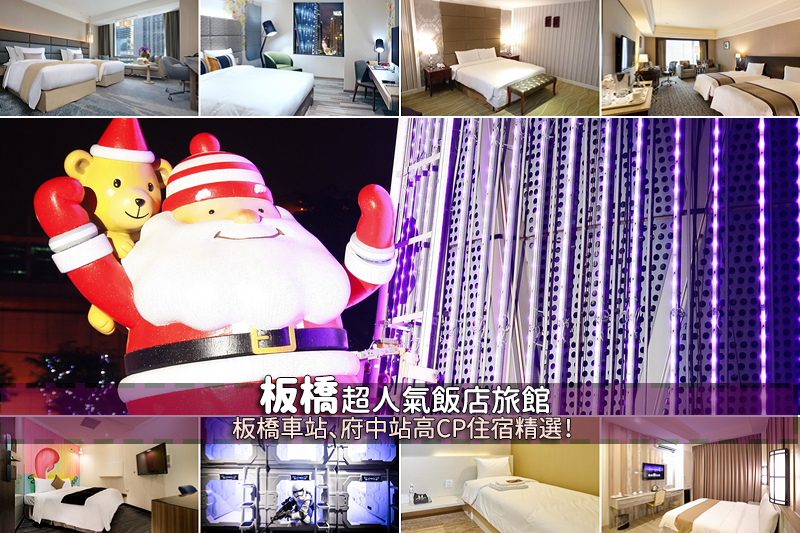 板橋車站(擁有台鐵、高鐵、捷運三鐵共構)、府中商圈是大家最愛入住的地點。 其中又以板橋車站最難訂，除了就在新北板橋耶誕城心臟地帶外，周邊飯店旅館選擇本就少也是原因。 超人氣高CP值住宿清單，波比都整理在下面了，有需要的外地遊客趕緊搶攻啊～
新北耶誕城美食選擇超多，板橋車站 (樂麵屋、布娜飛比利時啤酒餐廳)、板橋大遠百 (鼎泰豐、添好運、地下街)、 新北市政府周邊 (六必居潮州沙鍋粥) 都是平常就大排長龍的人氣首選。府中商圈一樣炙手可熱 (博多拉麵、 黃石市場內的高記生炒魷魚、老曹餛飩、全香豆花) 等美味一籮筐，說都說不完啊，盡情吃個過癮吧！
【板橋美食懶人包】43 間在地人必吃推薦、口袋名單：聚餐約會、餐廳、小吃
大人小孩都無法克制，狂按快門的新北耶誕城就分享到這裡啦，讓我們一起嗨到2020年，開心迎向嶄新的一年吧！